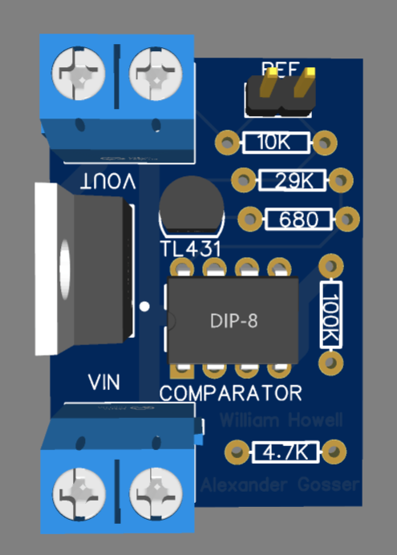
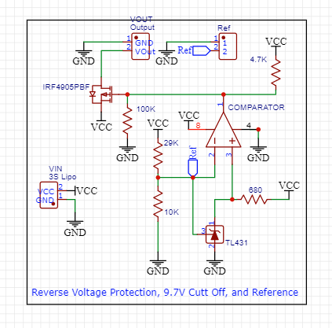
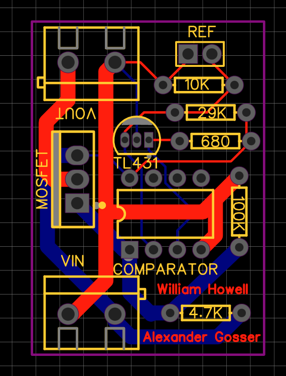
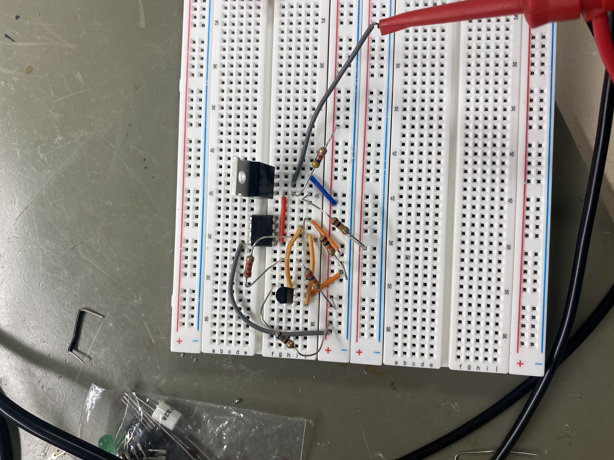
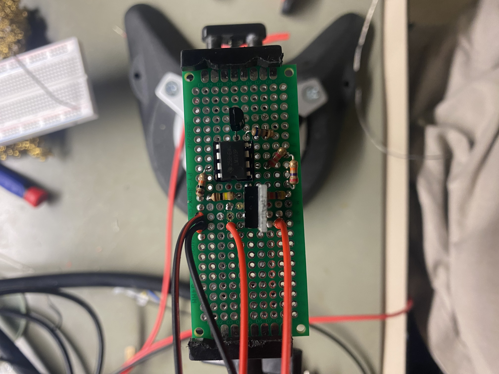
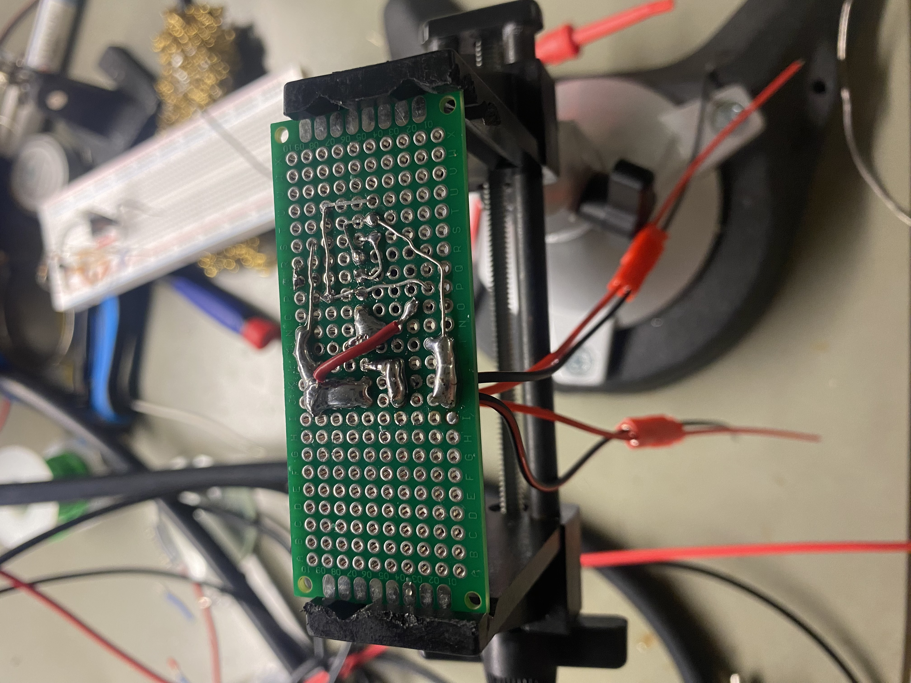
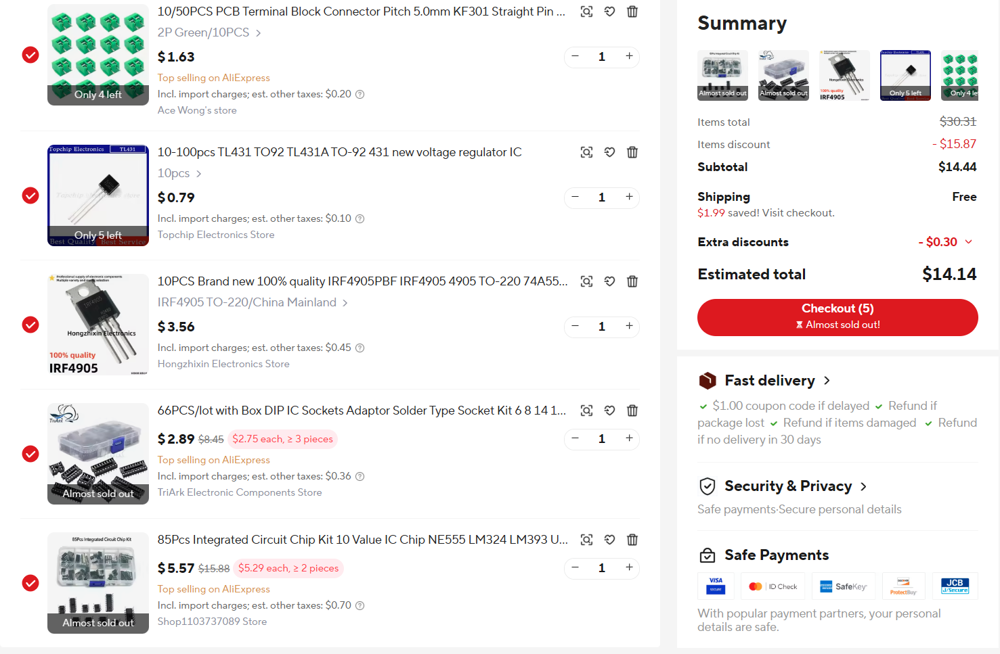
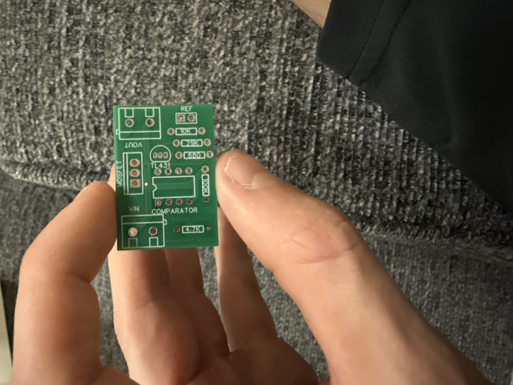
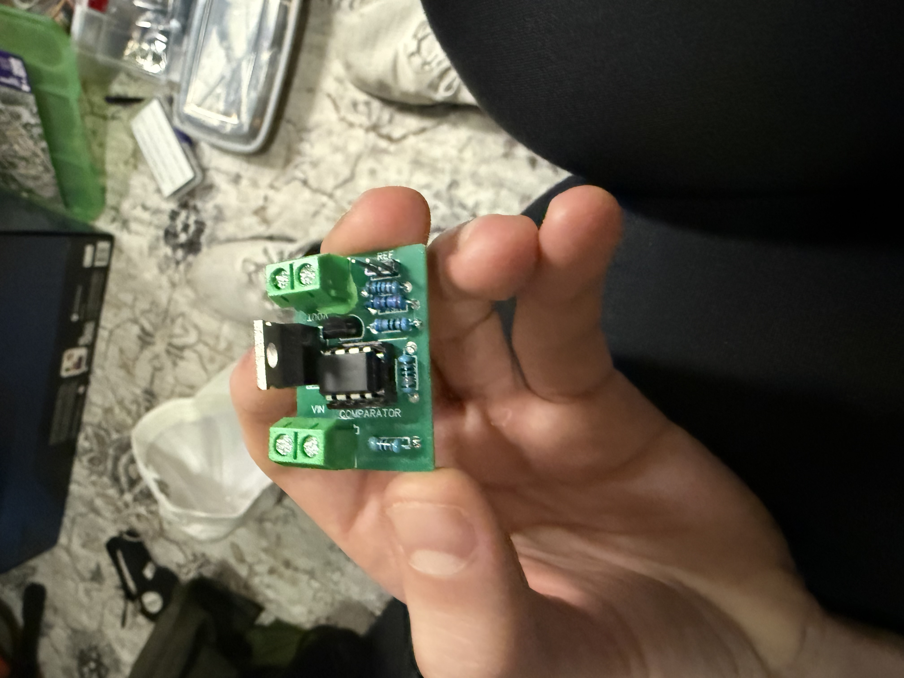
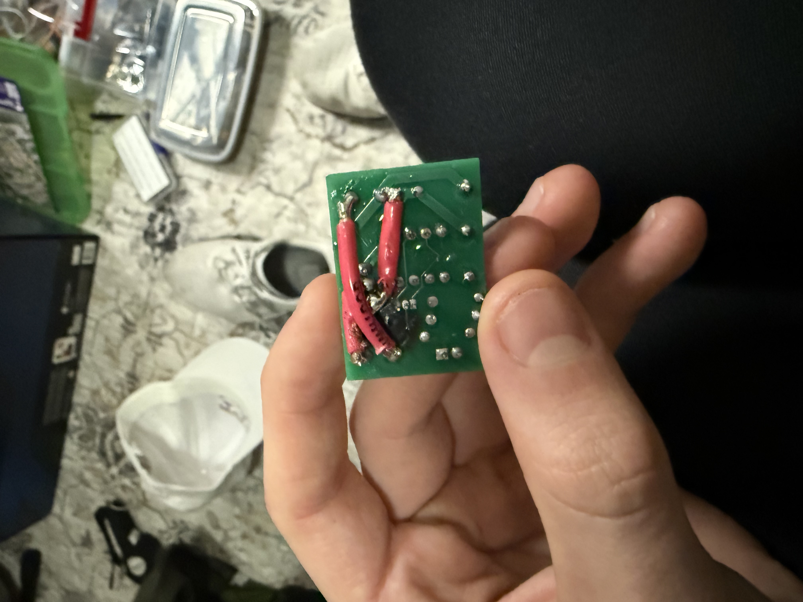

Low-Voltage Cutoff PCB for 3S Battery Protection
Designed and assembled a comparator-based protection board that disconnects a 3S lithium battery near 9.7 V to reduce the risk of over-discharge in robotics power systems.
- Role
- Schematic, PCB layout, assembly, and testing
- Tools
- EasyEDA, JLCPCB, breadboard, perfboard, soldering tools
- Result
- Validated cutoff behavior and reinforced current path for higher load current

Problem
The robot power system needed a hardware cutoff that could protect a 3S pack without relying on firmware. I wanted the circuit to respond directly to pack voltage and keep the load disconnected once the battery dropped below a safer operating range.
Design
I used an LM393 comparator to compare a divided battery voltage against a TL431 2.5 V reference. A 27 kOhm / 10 kOhm divider sets the trip point near 9.7 V, and the comparator output drives a P-channel MOSFET stage for load switching. Pull-up and pull-down resistors were added during revision work to make the transition more reliable.
The PCB was laid out in EasyEDA and ordered from JLCPCB. I included terminal blocks for the battery and load, an IC socket for the comparator, and reference points so a microcontroller could monitor pack voltage later.


Validation
Before ordering the board, I tested the circuit on a breadboard and then rebuilt it on perfboard. That process helped confirm the comparator threshold, resistor choices, and switching behavior before committing to the manufactured PCB.



Result
After assembly, I reinforced the high-current path with 12 AWG wire because the PCB trace width alone was closer to a 6 A current path than my approximately 12 A target. The final board demonstrates schematic capture, PCB layout, analog threshold design, soldering, and design-for-current improvements.



